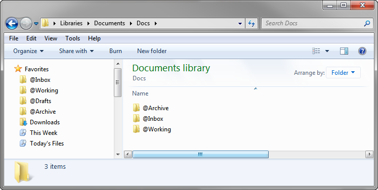

File Folder Structure for Life
After 12 years of professional life as a software developer, quantitative analyst, and auditor, I have finally settled on a file folder structure that works for me. It is simple, flexible, and future-proof.
Here it is:
- Docs
- @Archive
- 2012
- @Drafts
- Project A Name
- Project B Name
- 2013
- @Drafts
- Project 1 Name
- Project 2 Name
- Project 3 Name
- 2012
- @Inbox
- @Working
- @Archive
Simple, isn't it? You probably do something similar already. This structure is meant to put emphasis on the files you need to work on right now, and segment everything else for easier searching in Windows Explorer.
What each of the folders is for
Docs
This is the root folder for all your stuff.
On Windows, the "Documents" (or "My Documents") folder is used in all different ways by all of your programs for settings and other junk. My "Documents" folder has about 30 folders in it, all put there by Windows itself or by various programs installed on my system, and I am kind of afraid to delete them. Because those folders are in my way, I created a "Docs" subfolder within the "Documents" folder to contain all the work-related files that I actually put there. This allows me to easily scope "all my stuff" for a Windows Explorer search. Also, because it is still in my "Documents" folder, my workplace backup routine still picks it up. If you have a "home directory" or "home drive" at work, and it is indexable/searchable, use that as your Docs folder.

@Inbox
The "@Inbox" folder is a drop box for unfiled stuff, an an easily accessible and very temporary place for your files to land.
It is where I save all the email attachments and downloads I use for work. I also create new documents in this folder by default, so I don't have to think about filing when I want to concentrate on my work. As soon as I close the files, or at least once a day or so, I clean this folder out by deleting files I no longer need, and moving files I need to keep to archive folders (see below). This folder does not really work well unless you empty it each time you complete work; think Inbox Zero.
@Working
The "@Working" folder is for shortcuts to the project folders and files I am working on presently.
I update it every week or so with new shortcuts to help me out with my current projects. I use this folder, rather than digging through a whole folder tree, when saving or moving files I'm working on. I don't use this folder for actual files.
This folder is useful because the shortcuts it contains save you time from digging through the "@Archive" folders. Other than that, I don't use this folder to store actual files. Like the "@Inbox", it is important to keep the "@Working" folder current by removing shortcuts you don't need any more and adding those you do.
@Archive
All the files I need to keep, whether I am working on them at present or not, are stored within the @Archive folder tree.
Every year gets a sub-folder. Every project gets a subfolder beneath the year in which it started. Multi-year projects get one folder per year. I find that it is more useful to organize your files by project, rather than by file type.
One problem with working with files is that they accumulate over time and can create a big mess. You should really get the old ones you don't need anymore—but are afraid to delete for any reason—out of the way of the new ones that you are working with right now.I used to move defunct and completed project folders to an "@Archive" folder to separate them from what I'm currently working on. Large project folders got their own "@Archive" subfolders within them, too.
I figured out recently, though, that moving project folders to archives made less sense than putting the project folders in the right archive from the start. Differential backups are one reason for wanting to keep your files in the same place over time. Another reason is that Windows file shortcuts (or symlinks on every other operating system) are a more flexible method for keeping current items at the ready.
It's true that I can offer now great secret for managing the files within your project folders. That is up to you. I find it does help to make a new project folder each year, though, because it removes out-of-date files and subfolders that are most likely stale. For multi-year projects, if you really need access to some of last year's files, create shortcuts to them in the current year's project folder.
@Drafts
All plaintext notes and drafts are kept in a single "@Drafts" folder within each year.
It would be simpler to have a single "@Drafts" folder, applicable to all years, at the same level of "@Archive". I chose not to because I write hundreds of drafts and notes every year, and those that are over a few months old are stale and not referenced much. Still, there is useful information in those old files, and I would like to keep searchable archives around. Therefore, I create a new "@Drafts" folder each year, and update my Windows Explorer Sidebar and Sublime Text project accordingly.
How to use this system
Here are examples of some typical workflows to give you an idea what it is like to work with this system.
Typical file workflow: handling a quick-turnaround request
- I get an email with a request, some supporting documentation, and some data to work with.
- I detach the attachments to \Docs\@Inbox and start working with them.
- I create a new file in \Docs\@Inbox to store my response.
- I do my work and complete my response, which is still in \Docs\@Inbox.
- I email the report, attaching the file from @Inbox.
- I file the report in \Docs\@Archive\Year\Project\Subfolder, which I create if necessary.
- If I need to keep the supporting files that are still in @Inbox, I move them to \Docs\@Archive\Year\Project\Subfolder. If not, I delete them from @Inbox.
Typical file workflow: handling a long-term request
- I get an email with a request, some supporting documentation, and some data to work with.
- I detach the attachments to @Inbox and start working with them.
- I create a new file in \Docs\@Inbox to store my response.
- I file all the documents received and my new file \Docs\@Archive\Year\Project\Subfolder, which I create if necessary.
- If it isn't there already, I create a shortcut to \Docs\@Archive\Year\Project or \Docs\@Archive\Year\Project\Subfolder to the \Docs\@Working folder. This helps me jump back to that project quickly in the future.
- When I am done with the project, I remove the shortcut to it in the @Working folder.
Typical file workflow: finding a particular file
I almost never browse for files any more unless I put them in my "@Inbox". Instead, I search for them. In Windows (and in any other operating system), you can limit your search to a single folder tree to narrow its scope and filter out (and not search through) irrelevant files. This is the main reason for setting up a folder tree in the first place. Here are steps that I take to get to the files I want to open:
- If it is a recent file, I use Windows Saved Searches that I have set up for "Today" and "This Week", then search for the file within that meta-folder. (This is a great approach for attaching the file you just saved to an email.
- If I know the year and project, I go to that folder (which is within @Archive) in Windows Explorer and start searching (using the built-in search functionality) for the file I need by name or contents.
- If I don't know the year and/or project, I just got to my root folder ("Docs") and start doing searches there.
I usually find what I am looking for very quickly.
Isn't this a lot of trouble?
Yes, but no matter what you do, it is a lot of trouble to manage files on a computer. But the alternative is not knowing where anything is, and probably not being able to find it sometimes, even with Windows's built-in search.
With this system, I no longer have to think too hard about where things go. As long as files I need to keep go in the right project folder eventually, everything I want to find is quickly discoverable.